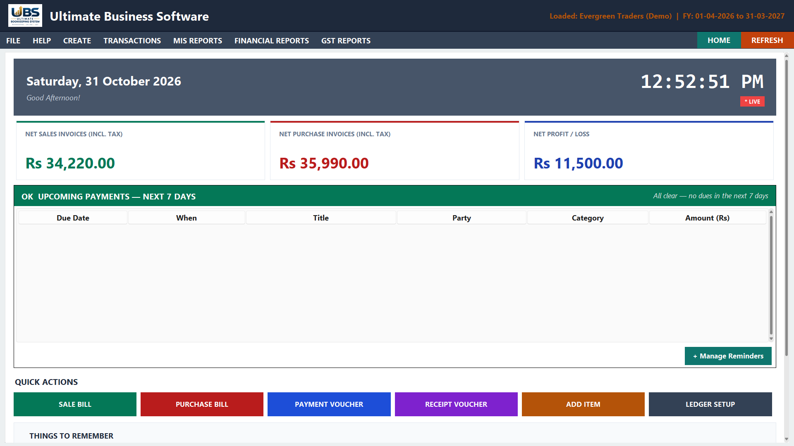
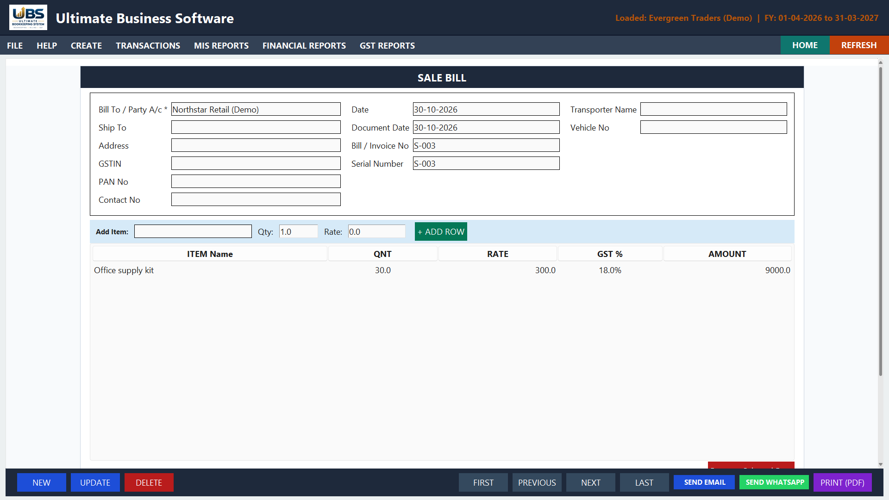
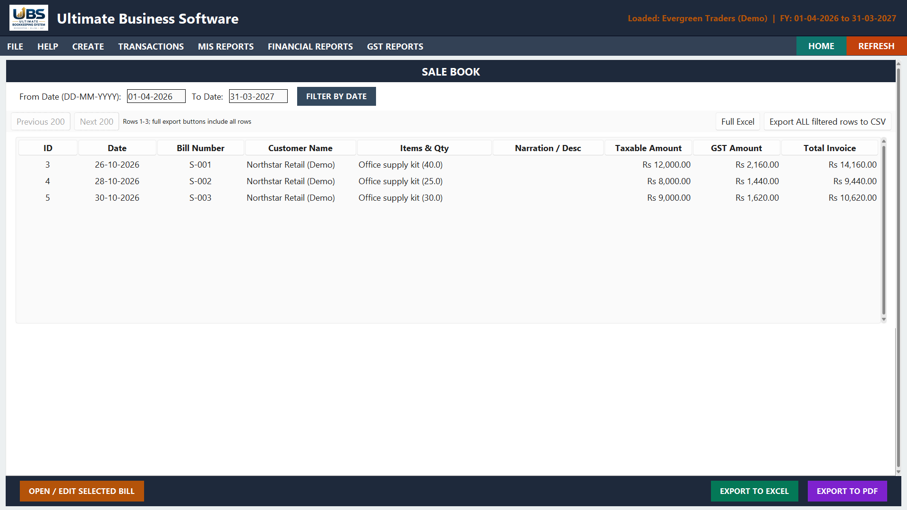
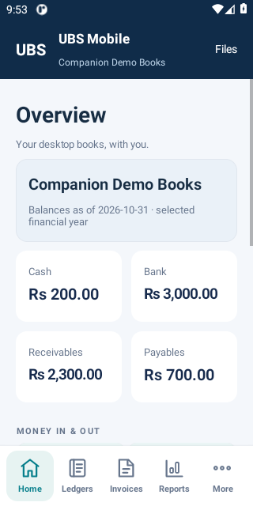
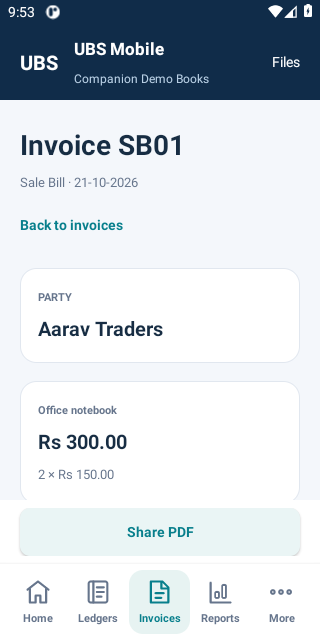
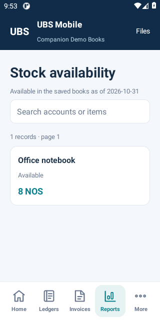

1. About UBS
UBS is an installed bookkeeping, billing, inventory and reporting application. Your company books remain on your device unless you deliberately enable an eligible backup or synchronisation service.
What you can do
- Create multiple companies and financial years.
- Maintain account ledgers, groups, items and opening balances.
- Record sales, purchases, returns, orders, challans and vouchers.
- Manage stock, fixed assets, bank reconciliation and receivables.
- Produce accounting, financial, management and GST reports.
- Export supported reports and documents to PDF, Excel or CSV.
Before you begin
- Use a separate UBS account for the legal owner or responsible business user.
- Keep the company password and backup password in a password manager.
- Confirm your accounting policy, GST treatment and opening figures with your accountant.
- Create a tested local backup before importing, restoring or updating.
2. Install and update UBS
Website installer
- Download the current Windows installer only from the official UBS download page.
- Optionally verify the SHA-256 value using the download verification tool.
- Close UBS. If updating, make a recovery backup first.
- Run the installer. For an existing installation, choose the existing UBS folder so saved application data remains available.
- Open UBS and confirm the version shown in the application.
Microsoft Store version
Install UBS from its Microsoft Store listing and let Windows manage updates. Version 3.6.13.0 includes the complete Pengu model for a new user, so the Store package is intentionally much larger than a compact launcher.
Check from inside UBS
Open Help → Check for updates. UBS offers only update files that pass its release verification. Let an interrupted download resume where supported.
3. UBS account, trial and licence
- Open Settings → Account & licence.
- Create an account with an email address you control.
- Open the verification message and confirm the email.
- Sign in to start an eligible trial or activate an approved plan.
- After KD FINCORP changes your licence, select Sync licence now.
Connect the device to the internet periodically for licence verification. Your saved books are not deleted when a licence needs attention.
4. First-time setup: the shortest safe route
- Install UBS and verify your email account.
- Create the company and choose the correct financial-year dates.
- Create a strong company access password.
- Review account groups and create customers, suppliers, bank accounts and expense/income ledgers.
- Create inventory items and confirm units, opening stock, rates and GST details.
- Enter verified opening balances.
- Create and test an encrypted backup.
- Record one sample sale and purchase; then review the ledgers, stock and Trial Balance.
- Remove or reverse sample entries according to your bookkeeping policy before live use.

5. Companies, financial years and company passwords
Create a company
- Open Company → Companies → Create company.
- Enter the legal/trading name, address and applicable registration details carefully.
- Select the financial-year start and end dates.
- Create an access password. This protects opening that company inside UBS.
- Review the details and save.
Open or switch company
Use Company → Companies → Open / switch company, select the company and enter its access password. Confirm the company name and active financial year before recording anything.
Forgot the company password
- Open the company selection screen and choose the affected company.
- Select Forgot company password?
- Re-authenticate using the password of the registered UBS owner account.
- Enter and confirm a new company password.
- Open the company using the new password.
7. Set up masters correctly
Account groups / annexures
Open Masters → Accounts → Account groups / annexures. Groups determine where balances appear in financial statements. Avoid creating duplicate groups with slightly different spelling.
Account ledgers
Open Masters → Accounts → Account ledgers. Create customers, suppliers, cash/bank accounts, expenses, income, assets, liabilities and capital accounts under the correct group. Enter contact and tax details only after checking the source document.
Inventory items
Open Inventory → Items & stock → Create / edit items. Set the item name, unit, sales/purchase rates, opening quantity/value and applicable tax information. Item names and units should stay consistent.
8. Sales workflow
Create a sales invoice
- Open Transactions → Sales → Sales invoice.
- Select the customer and invoice date. Confirm that it belongs to the active financial year.
- Enter the bill number/reference, items, quantity and rate.
- Choose IGST or CGST+SGST only from confirmed place-of-supply and tax facts.
- Review taxable value, discount, tax and final total.
- Save, then print or export the invoice if required.

Orders, challans and returns
A Sales order records a customer commitment without posting the final sale. A Delivery challan (outward) records movement/delivery as applicable. Use Sales return against the original transaction where possible so tax, stock and customer balances reverse correctly.
9. Purchase workflow
- Open Transactions → Purchases → Purchase bill.
- Select the supplier and enter the supplier’s invoice date and number.
- Add items, quantities, purchase rates and confirmed tax treatment.
- Review whether input tax is actually eligible; a GST amount on a bill does not by itself establish eligibility.
- Check the final payable and save.
Scan bill from PDF or image
- Open Transactions → Import → Scan bill from PDF / image.
- Select a clear PDF or image.
- Compare every extracted field with the original—supplier, GSTIN, items, quantities, rates, tax and total.
- Correct unread or uncertain values.
- Select Open in bill form to continue editing, or Save reviewed bill only after verification.
Use Purchase return to reverse goods returned to a supplier. Link it to the original purchase when the screen permits.
10. Cash, bank and journal entries
| Screen | Typical purpose |
|---|---|
| Record expense | Common business expense paid or payable. |
| Receipt voucher | Money received into cash/bank, including customer collection. |
| Payment voucher | Money paid from cash/bank, including supplier settlement. |
| Contra entry | Transfer between cash and bank or between bank accounts. |
| Journal entry | Non-cash adjustment supported by accounting evidence. |
| Credit / Debit note | Business adjustment with the appropriate documentary treatment. |
When saving a receipt or payment for an existing invoice, map it to the eligible unpaid bill. A partial allocation leaves an outstanding balance; an unallocated excess may remain as an advance.
Bank reconciliation
- Open Transactions → Cash & bank → Bank reconciliation.
- Select the correct bank ledger and statement period.
- Compare UBS entries with the bank statement.
- Mark only genuinely matched entries and investigate differences.
- Retain the statement and reconciliation evidence.
11. Inventory and fixed assets
Use Inventory → Items & stock → Stock & valuation report to review quantities and values. Use Stock adjustment only after a physical count or documented correction; record the reason.
- Replenishment: identify stock that may need ordering.
- NRV: compare carrying value with supported net realisable value assumptions.
- Fixed Assets Register: maintain acquisition, classification and depreciation-related information.
12. Accounting, financial and GST reports
Choose the company, financial year and report date range first. Generate the report and wait for it to finish before exporting.

Accounting books
- Day Book
- Ledgers
- Journals
- Sales Book
- Purchase Book
Financial statements
- Trial Balance
- Profit & Loss
- Balance Sheet
- Cash Flow
- Changes in Equity
- CMA Report
A sensible review sequence
- Review Day Book for missing or duplicated activity.
- Review relevant party and bank ledgers.
- Check the Trial Balance.
- Review Profit & Loss and Balance Sheet movements.
- Reconcile stock, receivables, payables, cash, bank and tax control accounts.
- Then review GST and management reports.
GST reports
GSTR-1 summarises outward supplies, GSTR-2 supports inward-supply review, and GSTR-3 presents net-liability information within UBS. Treat them as bookkeeping reports for review—not as proof that a statutory return has been filed. Reconcile with source invoices, portal data and current legal rules.
13. Financial years
Switch or create a year
Use Company → Financial year. Confirm opening dates and balances before entering transactions. The active year controls which records and reports you are working with.
Close a financial year
- Finish reconciliations and obtain required review/approval.
- Create and verify a backup stored outside the live UBS folder.
- Open Close financial year.
- Select the appropriate profit/loss transfer ledger.
- Enter the company password and confirm only after reading the warning.
14. Backup, restore and synchronisation
Create an encrypted local backup
- Open Company → Data & backup → Company Data & Backups.
- Set a backup password of at least 12 characters and store it securely.
- Select Back Up All Companies or the applicable backup action.
- Save the
.ubsbackupfile to a separate drive or protected location. - Confirm UBS reports that the backup was created and verified.
Restore
Use Restore All Companies for a .ubsbackup file. Use Add Companies only for an applicable UBS database file. Restoring can replace live books, so verify the file date, company, source, password and backup copy before continuing.
Cloud backup and sync
Eligible plans can enable live cloud backup in Company Data & Backups. Allow uploads to finish before shutting down. Check the displayed last-verified backup time and retry an incomplete operation. When two devices have changed independently, stop and determine which copy or supported merge path is correct.
15. Users, audit, LAN and Connected
Staff users
Use Settings → Users & audit → User Management to create individual users and grant only the permissions needed for their duties. Do not share an administrator login. Review the Audit Trail for relevant changes.
Office LAN
One configured PC hosts the company data. The host must remain powered on, connected to the office network and available while staff work. Configure the host and client using Office LAN Host and Office LAN connection. Back up the host data, not an arbitrary client cache.
Connected pilot
Connected supports approved cross-location workflows. It is not a substitute for deciding how concurrent changes should be controlled. Follow the specific onboarding provided for the account and review sync status before switching devices.
16. Pengu — the accounting assistant
Open Help → Pengu — accounting assistant. In the complete Microsoft Store package, the local model is bundled for a new user. In other distributions, first use may download about 2.5 GB; after setup, supported inference runs locally.
Good questions
- “Explain a receipt against an unpaid sales invoice.”
- “Show a basic purchase entry without GST.”
- “What should I verify before recording a sales return?”
- “Explain why my Trial Balance may differ.”
What Pengu will not do
- Guess current tax rates or legal eligibility.
- Post, edit or delete entries by itself.
- Approve an extracted invoice without your review.
- Replace an accountant or official authority.
17. UBS mobile companion reference
Mobile access depends on the approved plan. It provides selected company, ledger, invoice, stock, receipt/payment, reminder, report and synchronisation workflows. Capabilities may differ from Windows.



Update the existing mobile app without uninstalling or clearing its storage. Use the app’s normal close/back flow when it offers a backup prompt; force-closing an app cannot guarantee an upload.
18. Security and data protection
- Use unique passwords for the UBS account, each sensitive company and encrypted backups.
- Store passwords in a trusted password manager; do not keep them in the company notes.
- Keep Windows, antivirus protection and UBS updated.
- Download only from KD FINCORP’s official website, GitHub release or Microsoft Store listing.
- Give each staff member a separate user with minimum necessary permissions.
- Keep at least one tested backup offline or otherwise isolated from the working computer.
- Review support files before sharing and remove unnecessary private information.
- Never permit an unknown person to remotely control the computer.
19. Troubleshooting
| Problem | What to do |
|---|---|
| Forgot company password | Select the company, choose Forgot company password?, re-authenticate the registered UBS account and set a new password. |
| Forgot backup password | Company-password reset will not help. Check the password manager and authorised records; contact support before altering files. |
| Setup says UBS is running | Close UBS and related windows. If none is visible, restart Windows and run setup again. |
| Report appears old | Confirm the company, financial year and date range, then generate the report again before exporting. |
| Stock is negative | Check dates, missing purchases, duplicated sales, returns, units and stock adjustments. |
| Cloud backup incomplete | Keep the designated PC awake and online; open Company Data & Backups and retry. Do not restore a different copy merely to clear a status. |
| Licence change not shown | Connect to the internet and use Settings → Account & licence → Sync licence now. |
| Pengu unavailable | Confirm the complete package/model is installed, sufficient disk space is available and initial setup finished. |
Create a support report
Open Help → Troubleshooting → System Health, run the checks and select Save support report. Include the UBS version, device type, company name only if needed, the action attempted, exact error text and time. Never include a password or recovery key.
20. Recommended operating routine
Every day
- Confirm company and year before entry.
- Use source documents.
- Review totals before saving.
- Check backup/sync completion before shutdown.
Every week
- Review Day Book and bank activity.
- Check receivables/payables and negative stock.
- Create a separate recovery backup.
- Check for UBS updates.
Every month
- Reconcile bank, cash and control accounts.
- Review Trial Balance, P&L and Balance Sheet.
- Reconcile GST reports to source and portal information.
- Test that a backup can be selected and validated.
Year end
- Complete reconciliations and adjustments.
- Obtain accountant/owner approval.
- Create multiple verified backups.
- Close the year only when authorised.
21. Glossary and support
| Company password | Controls opening a selected company inside UBS. |
|---|---|
| UBS account password | Authenticates the registered online account and can authorise company-password recovery. |
| Backup password | Encrypts a .ubsbackup recovery archive. |
| Ledger | An account that collects transactions and balances. |
| Voucher | A record of an accounting transaction. |
| Financial year | The accounting period currently selected for entry and reporting. |
| Trial Balance | A list of ledger balances used to check debit/credit agreement and support review. |
| Sync | A controlled process for exchanging eligible data between approved devices/services. |
Official support
Email kdfincorpindia@gmail.com or call +91 87270 74564. See installation, verification and support help and release notes.